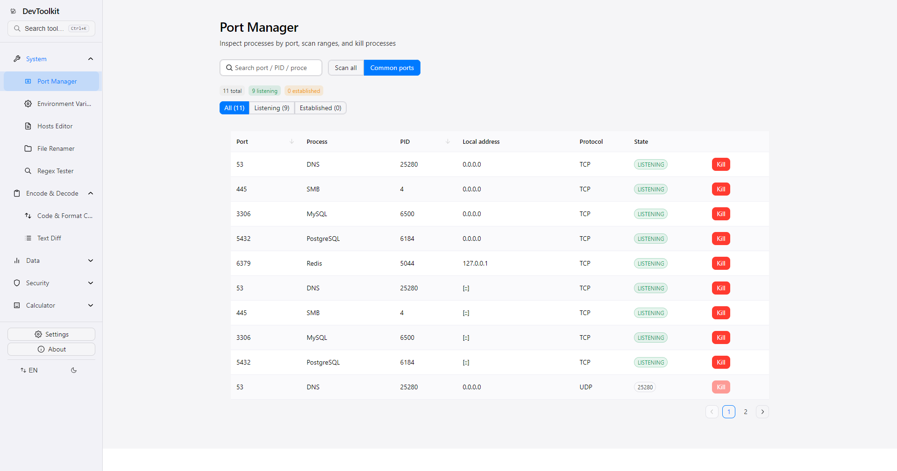
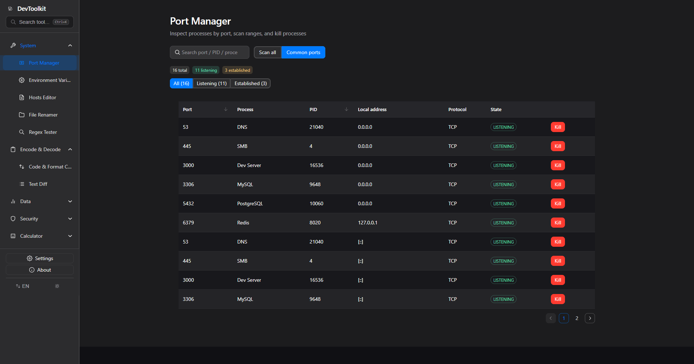
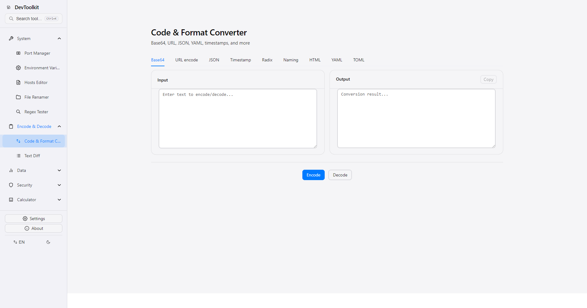
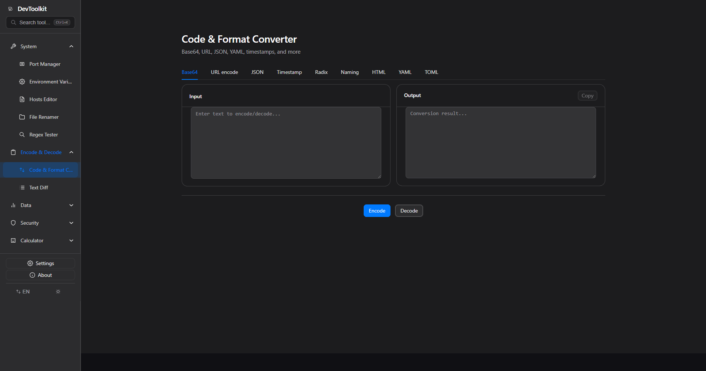
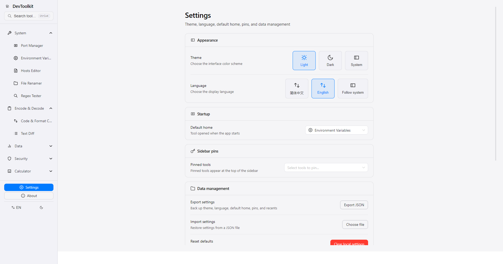
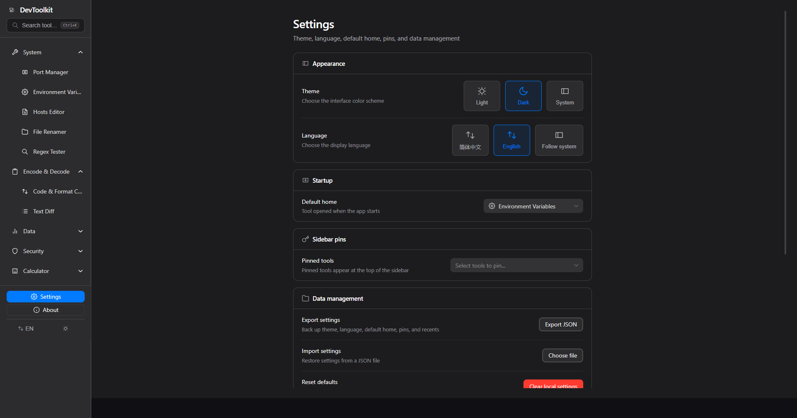

Covering system management, encoding/decoding, and data conversion — each tool does one thing well
Manage your local system — port scanning, environment variables, hosts editing, all in one place
Common encoding format conversion and text diff, with a unified entry point for quick switching
Generators and calculators for the tools you use most during development
Following Apple design guidelines, every interface pursues intuition and aesthetics


Port Manager

Code Format Converter

SettingsEach tool page focuses on doing one thing well. Search and aggregated entries avoid duplication, keeping the sidebar clean.
All features run entirely locally with no network connection required. Your data always stays on your device — privacy guaranteed.
Following Apple Human Interface Guidelines — clean interfaces, smooth animations, and intuitive operations.
Full bilingual support (Chinese and English) with seamless in-app language switching for developers worldwide.
Clone the repo, install dependencies, and launch the dev server
git clone https://github.com/blueWhalei/dev-tool-kit && cd dev-tool-kit && pnpm install && pnpm dev